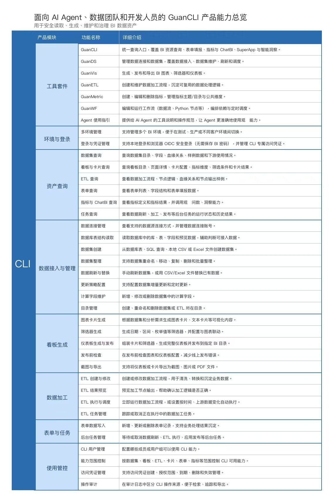

一份来自一线的打单方法论：为什么是 cli 而不是其他 AI 产品、什么样的客户最该打、四种客户怎么分层培育，以及实战中避不开的那些问题。
不是炫数字，而是验证了一条打法确实走得通：以 cli 为单点突破口，增购线索在持续放大。
↑ 仍有上升空间：渗透率未到天花板，可继续摸排。本阶段特别感谢产品侧同学的大力支持：matt、颖博、贺峰、赵阳 等。
今年公司鼓励 AI 产品推荐与打单，AI 产品矩阵分为五类。站在客户成功视角，我做了一次个人客观取舍。
现在 AI 这么流行，你们公司在用什么 AI 工具了吗？
你们平常用这些 AI 工具主要做什么呢？解决了什么问题？
在这样的情况下，你们跟 BI 工具是怎么搭配结合的呢？
你觉得在 AI 发展的趋势下，对未来的工作模式有什么预期和期待吗？
四类客户天然和 cli 匹配，遇到就值得重点推。
有意识、没路径。cli 直接给一个可落地的入口，比讲理念更实在。
把 BI 里的数据资产接进 Agent，让"问一句拿结果"成为日常。
已经验证过"接出来用"的价值，cli 是更顺手、更省心的升级替代。
有自研习惯和工程直觉，对 Agent 交互接受度天然高。
培育过程里，我把客户按"感知度 × 使用深度"切成四档，分别对应不同的孵化动作。
完全没进群、对 cli 没感知。
进群了，但不会用。
进群了，但用得不深。
进群且用得很好。
以客户 A（「探X智能」）为例，演示 4.1 档客户的完整孵化链路。
现场沟通时发现客户对 cli 完全没概念，但同时具备两类特征：画像 3.3 用过 Public API ＋ 画像 3.1 想提效不知怎么用。价值已被他们自己验证过，只是没接上 guancli 这条更顺的路。
建立专项群做定向孵化，节奏是：首次安装 → 首次使用 → 案例分享 → 更新通知 → 产品答疑。不一次性灌输，而是让客户在每个小节点都拿到正反馈。
趁客户已经用顺手、离不开之前，提前铺垫"后期会进行收费"，把预期管理做在前面，避免后面临门一脚时心理落差过大。
真实打单里绕不开的几类阻力，以及我目前的解法。

站在方法论之外，几点一线体感。
单点破局后，再回过头摸排洞察 Agent / ChatBI / SuperApp / DecideX 的二次机会——cli 拿到的是信任和入口位。
安装、使用、案例、更新、答疑，这五件事要循环做。客户的 Agent 习惯是养出来的，不是讲出来的。
主动讲清 cli 的能力边界和使用方法，建立专业信任，也为后续收费铺垫了合理预期。
当前 50%+ 仍有上升空间，下一步是把"四类客户"的孵化 SOP 标准化，让复制不依赖个人手感。
选对入口（cli）→ 找准画像（四类人）→ 分层培育（四档客户）→ 提前铺垫（价值后被收费）→ 单点破局后再摸排全产品机会。